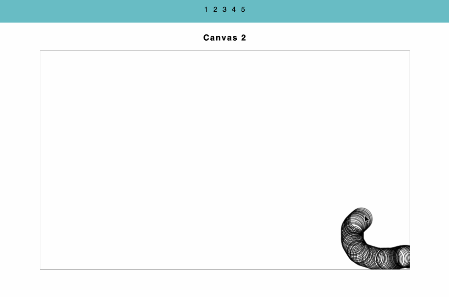
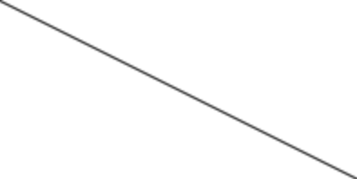
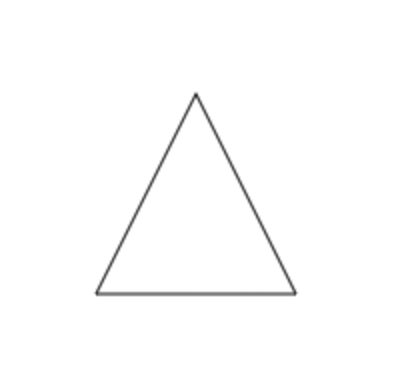
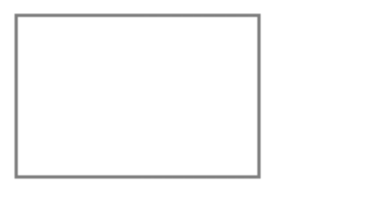
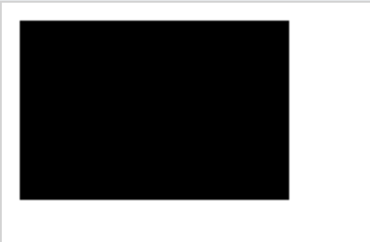
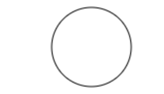
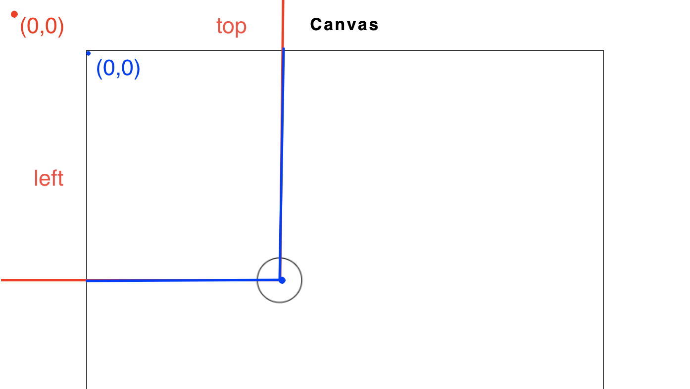

# Class 11 Drawing shapes on Canvas Programming Interactivity ---- Harbour Space --- ## Agenda <div style="text-align: left;"> 01/ Presentation of Weekly Project 2 02/ What is a Canvas 03/ Canvas Line Drawing methods 04/ Canvas Shape Drawing methods 05/ Excercise </div> --- ## 01/ Weekly Project 2 presentations Note: - If you want to, you can also show us your Class project 9 with the animations. It might be fun to share the last animation that you got to create yourselves. --- ## 02/ What is Canvas --- ### What is HTML canvas element `<canvas>` is an HTML element for drawing graphics using javascript It's a blank rectangle where you can draw shaped, images and more Note: - A `<canvas>` tag is exactly like an `<img>` tag, with the difference that instead of loading the image of pixels, you can draw it yourself with javascript code. - You can draw lines, circles, filled polygons and gradients. You can also redraw the canvas content in a loop to make an animation. --- ### Rendering basic blank `<canvas>` ``` js <canvas id="myCanvas" width="500" height="500"></canvas> ``` Note: - here is how you can render a html canvas. This is just an HTML tag. --- <img src="https://miro.medium.com/v2/resize:fit:1000/1*6v8NifqESEqBdw9Ai9RR6Q.jpeg"> Note: - This is basically what we are doing. - This is a blank canvas, 500px by 500px and then we can draw on it using javascript. --- ### What can canvas be used for To draw pixels programmatically, can also be done by user input for example the good old Paint  Note: - we can use it tp draw pixels programatically. Canvas is just a matrix of pixels or a blank box of pixels - Here is an example of a canvas, that draws circles every time a user moves the mouse. And this is an example of a project we are going to do later. --- ## 02/ Canvas Line Drawing methods Note: - Today we are mainly going to go trough how we can draw some shapes on a canvas. And we will start with lines. --- ### Canvas context ``` js <canvas id="myCanvas" width="500" height="500"></canvas> const canvas = document.getElementById("myCanvas"); const canvasContext = canvas.getContext("2d"); ``` - We are going to look at "2d" - But there are also `webgl`, `webgl2`, `webgpu`, `bitmaprenderer` Note: - Here is how we can get the canvas context, that provides us many methods to draw on the canvas. We are just going to use the "2d" canvas context. - There are also more context types, such as webgl, for three dimensional rendering context - webgl2, webgpu and bitmaprenderer context. But there is a whole other another class covering webgl - Here we are just consentrating in 2d, to practise some javascript and seeing what possibilities we have there to draw 2d on user interactions. --- ### Line drawing methods <div style="text-align: left;"> - ***beginPath()*** - starts a new path, should always be used between shapes - ***moveTo(x, y)*** - moves the starting point for the path to the specified (x, y) - ***lineTo(x, y)*** - Draws a line from the current position to the (x, y) position Note: - the 2d context provides us these methods to draw lines. - beginPath - starts a new path, and should always be used at the start of a new shape. It will start a new path and effectively "reset" the current path so you can draw without connecting to the previous path. - moveTo - moves the starting point for the path to the specified coordinates - lineTo - Draws a line from the current position to the (x, y) position --- ### Line drawing methods <div style="text-align: left;"> - ***stroke()*** - Strokes (outlines) the path with the current stroke color - ***fill()*** - Fills the path with the current fill colors if it is closed Note: - stroke - that outlines the path with the current stroke color, or basically draws up our line - fill - fills the path with the current fill colors, if its closed --- ### Line drawing methods ``` js canvasContext.beginPath(); canvasContext.moveTo(0, 0); canvasContext.lineTo(200, 100); canvasContext.stroke(); ```  Note: - This will create a straight line from 0,0 to 200,100 --- ## 03/ Canvas Shape Drawing methods --- ### Draw triangle ``` js canvasContext.beginPath(); canvasContext.moveTo(50, 150); // Start at (50,150) canvasContext.lineTo(150, 150); // Line to (150,150) canvasContext.lineTo(100, 50); // Line to (100,50) canvasContext.closePath(); // Closes path to form a triangle canvasContext.fillStyle = "green"; canvasContext.fill(); // Fills the triangle canvasContext.stroke(); // Outlines the triangle ```  Note: - We can also use the line drawing method to draw all kinds of shapes - Here is an example of how we can draw a triangle - We can then either use the stroke() method to create outlines or we can use the fill() method to fill the triangle. --- ### Draw rectangle / square <div style="text-align: left;"> ***rect(x, y, width, height)*** Defines a rectangle ***fillRect(x, y, width, height):*** Draws a filled rectangle. ***strokeRect(x, y, width, height):*** Draws the outline of a rectangle. </div> Note: - To draw a rectangle we have couple of methods. - fillRect that draws a filled rectangle - strokeRect that draws outlines of a rectangle --- ### rect() ``` js canvasContext.beginPath(); canvasContext.rect(10,10, 150,100); canvasContext.stroke(); ``` ***rect(x, y, width, height)*** Defines a rectangle  Note: - Starts at x 10 and y 10. 150 wide by 100 height - The rectangle method does just define the path so we need to use stroke() or fill() to actually draw it. --- ### fill Rect() ``` js canvasContext.fillStyle = "blue"; canvasContext.fillRect(10, 10, 100, 50); ``` fillRect(x, y, width, height): Draws a filled rectangle.  Note: - x is the x coordinate of the upper-left corner of the rectangle - y is the y coordinate of the upper - Will draw and fill it - the fill is black by default --- ### stroke Rect() ``` js canvasContext.strokeStyle = "red"; canvasContext.lineWidth = 3; canvasContext.strokeRect(130, 10, 100, 50); ``` ***strokeRect(x, y, width, height):*** Draws the outline of a rectangle. Note: - Here is an example of a strokeRect, that will draw outlines of a rectangle - Its the same as rect() with just the stroke() --- ### Draw circle ``` js canvasContext.beginPath(); canvasContext.arc(x, y, radius, 0, Math.PI * 2); // Full circle with radius 50 canvasContext.stroke(); ``` ***arc(x, y, radius, startAngle, endAngle)*** - Draws an arc with a specific radius between two tangent points.  Note: - x, and y will be in the center of the circle. Circle will draw around it as far as the radius is. So radius is technically half of the circle height or width --- ### Additional methods --- ### Fillstyle, strokestyle and lineWidth methods ``` js canvasContext.fillStyle = "pink"; canvasContext.strokeStyle = "red"; canvasContext.lineWidth = 10; ``` Note: - Must be called before the stroke() method --- ### clearRect() to Erase ``` js // Clears a rectangle from the canvas canvasContext.clearRect(0, 0, 50, 50); // Clears the whole canvas canvasContext.clearRect(0, 0, canvas.width, canvas.height) ``` ***clearRect(x, y, width, height):*** Clears a rectangular area, making it transparent. Note: - Here is an example of a clearRect, that clears a rectangle area, making it transparent. Can be useful for ereasing elements from the rectangle. --- ### Canvas width and height ``` js <canvas id="myCanvas" width="300" height="150"></canvas> ``` Note: - It is possible to specify the width and height of a canvas like this - If these are not specified, the default size is 300x150 --- ### Canvas width and height ``` js <canvas id="myCanvas"></canvas> const canvas = document.getElementById("myCanvas"); const canvasContext = canvas.getContext("2d"); canvas.width = 300; canvas.height = 150; // the whole window/viewport inner width canvas.width = window.innerWidth; canvas.height = window.innerHeight; ``` Best to add straight to canvas or programatically add in javascript based on screen size Don't use css as it can stretch the pixels Note: - If we want the size of it to be dynamic we can do that in javascript. We can set it there. - It's not recommended to use css to size the canvas, as that will just take the default size 300x150 and stretch it out. - If we want to to take up the whole page height, we can do this. --- ### possible eventListeners ``` js canvas.addEventListener("mousemove", function(event) { // ... something that happens on every mousemove }) // "mousedown, "mouseup", "mousemove", "click", // "mouseleave", "mouseover" ... ``` Note: - Just to re visit, the eventListener function. - We have been using it for the past week, but we have perhaps not used all its events. - Here are some more events we might want to know for today. --- ### How to get the mouse position on the canvas ``` js canvas1.addEventListener("mousedown", function (event) { // returns the size of the canvas and its position relative to the viewport. const rect = canvas1.getBoundingClientRect(); const mouseXPosition = event.clientX - rect.left; const mouseYPosition = event.clientY - rect.top; drawCircle(canvas1Context, mouseXPosition, mouseYPosition, 100); }); ```  Note: - From the event object we get from our mousedown event. We have access to event.clientX to know the x position of the mouse on the viewport or the window - then we can use the getBoundingClientRect to get where the Canvas is on the viewport. - Then we can subtract the left of the canvas from the position of the mouse. Then we see where you are at the canvas. - As the canvas coordinate will start at 0, 0 --- ### Lets try it! --- ### Excercise